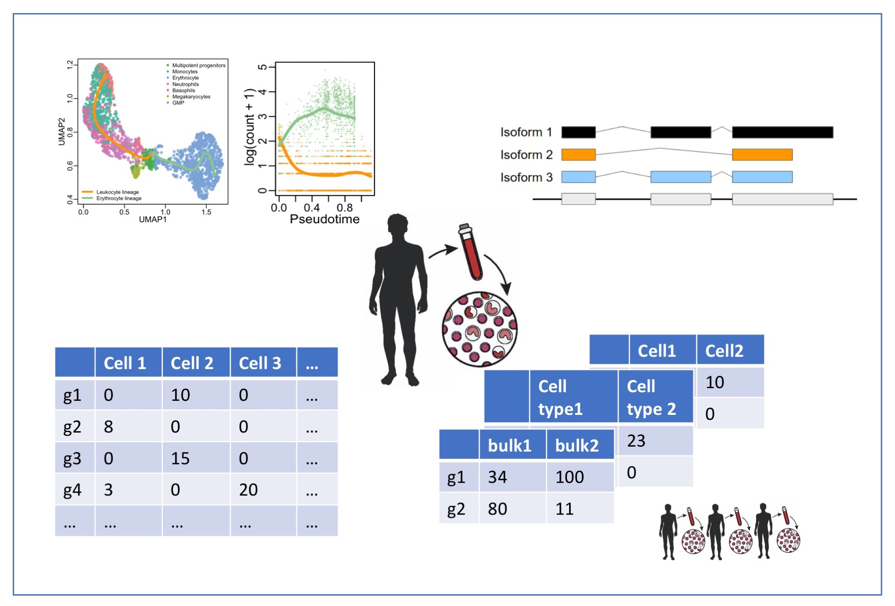

knitr::include_graphics("./figures/wpGraph.jpeg")

Course Description
High-throughput ’omics studies generate ever larger datasets and, as a consequence, complex data interpretation challenges. This course focusses on statistical concepts involved in preprocessing, quantification and differential analysis of high-throughput ’omics data. The core focus will be on shotgun proteomics and (bulk and single-cell) RNA-sequencing. Experimental design is essential to allow for correct interpretation in all ’omics studies, and we will cover how to design a statistically efficient experiment, as well as discuss the impact experimental design has on how we model ’omics data, introducing concepts such as blocking. The course will rely exclusively on free and user-friendly open-source tools in R/Bioconductor. We hope that this will provide a solid basis for beginners, but will also bring new perspectives to those already familiar with standard data analysis workflows for proteomics and next-generation sequencing applications.
Target Audience
This course is oriented towards biologists and bioinformaticians with a particular interest in differential analysis for quantitative ’omics data.
Prerequisites
The prerequisites for the Statistical Genomics Analysis course are the successful completion of a basic course of statistics that covers topics on data exploration and descriptive statistics, statistical modeling, and inference: linear models, confidence intervals, t-tests, F-tests, anova, chi-squared test. The basis concepts may be revisited in the online course at https://gtpb.github.io/PSLS20/ (English) and in https://statomics.github.io/statistiekCursusNotas/ (Dutch).
In addition, knowledge of programming in R is preferred. A primer to R and Data visualization in R can be found at:
Lecture material
All lecture material will be provided on this website. Please check the ‘Lectures’ tab at the top of the homepage.
| 1 |
Introduction |
Position of the course |
|
PDF |
|
| 1 |
Introduction |
Recap Linear Models |
HTML |
PDF |
|
| 1 |
Introduction |
KPNA2 Example |
HTML |
PDF |
|
LS0tCnRpdGxlOiAiU3RhdGlzdGljYWwgR2Vub21pY3MgQW5hbHlzaXMgMjAyMS0yMDIyIgotLS0KCgpgYGB7cn0Ka25pdHI6OmluY2x1ZGVfZ3JhcGhpY3MoIi4vZmlndXJlcy93cEdyYXBoLmpwZWciKQpgYGAKCiMgQ291cnNlIERlc2NyaXB0aW9uCgpIaWdoLXRocm91Z2hwdXQgJ29taWNzIHN0dWRpZXMgZ2VuZXJhdGUgZXZlciBsYXJnZXIgZGF0YXNldHMgYW5kLCBhcyBhIGNvbnNlcXVlbmNlLCBjb21wbGV4IGRhdGEgaW50ZXJwcmV0YXRpb24gY2hhbGxlbmdlcy4gVGhpcyBjb3Vyc2UgZm9jdXNzZXMgb24gc3RhdGlzdGljYWwgY29uY2VwdHMgaW52b2x2ZWQgaW4gcHJlcHJvY2Vzc2luZywgcXVhbnRpZmljYXRpb24gYW5kIGRpZmZlcmVudGlhbCBhbmFseXNpcyBvZiBoaWdoLXRocm91Z2hwdXQgJ29taWNzIGRhdGEuIFRoZSBjb3JlIGZvY3VzIHdpbGwgYmUgb24gc2hvdGd1biBwcm90ZW9taWNzIGFuZCAoYnVsayBhbmQgc2luZ2xlLWNlbGwpIFJOQS1zZXF1ZW5jaW5nLiBFeHBlcmltZW50YWwgZGVzaWduIGlzIGVzc2VudGlhbCB0byBhbGxvdyBmb3IgY29ycmVjdCBpbnRlcnByZXRhdGlvbiBpbiBhbGwgJ29taWNzIHN0dWRpZXMsIGFuZCB3ZSB3aWxsIGNvdmVyIGhvdyB0byBkZXNpZ24gYSBzdGF0aXN0aWNhbGx5IGVmZmljaWVudCBleHBlcmltZW50LCBhcyB3ZWxsIGFzIGRpc2N1c3MgdGhlIGltcGFjdCBleHBlcmltZW50YWwgZGVzaWduIGhhcyBvbiBob3cgd2UgbW9kZWwgJ29taWNzIGRhdGEsIGludHJvZHVjaW5nIGNvbmNlcHRzIHN1Y2ggYXMgYmxvY2tpbmcuIFRoZSBjb3Vyc2Ugd2lsbCByZWx5IGV4Y2x1c2l2ZWx5IG9uIGZyZWUgYW5kIHVzZXItZnJpZW5kbHkgb3Blbi1zb3VyY2UgdG9vbHMgaW4gUi9CaW9jb25kdWN0b3IuIFdlIGhvcGUgdGhhdCB0aGlzIHdpbGwgcHJvdmlkZSBhIHNvbGlkIGJhc2lzIGZvciBiZWdpbm5lcnMsIGJ1dCB3aWxsIGFsc28gYnJpbmcgbmV3IHBlcnNwZWN0aXZlcyB0byB0aG9zZSBhbHJlYWR5IGZhbWlsaWFyIHdpdGggc3RhbmRhcmQgZGF0YSBhbmFseXNpcyB3b3JrZmxvd3MgZm9yIHByb3Rlb21pY3MgYW5kIG5leHQtZ2VuZXJhdGlvbiBzZXF1ZW5jaW5nIGFwcGxpY2F0aW9ucy4KCiMgVGFyZ2V0IEF1ZGllbmNlCgpUaGlzIGNvdXJzZSBpcyBvcmllbnRlZCB0b3dhcmRzIGJpb2xvZ2lzdHMgYW5kIGJpb2luZm9ybWF0aWNpYW5zIHdpdGggYSBwYXJ0aWN1bGFyIGludGVyZXN0IGluIGRpZmZlcmVudGlhbCBhbmFseXNpcyBmb3IgcXVhbnRpdGF0aXZlICdvbWljcyBkYXRhLgoKIyBQcmVyZXF1aXNpdGVzCgpUaGUgcHJlcmVxdWlzaXRlcyBmb3IgdGhlIFN0YXRpc3RpY2FsIEdlbm9taWNzIEFuYWx5c2lzIGNvdXJzZSBhcmUgdGhlIHN1Y2Nlc3NmdWwgY29tcGxldGlvbiBvZiBhIGJhc2ljIGNvdXJzZSBvZiBzdGF0aXN0aWNzIHRoYXQgY292ZXJzIHRvcGljcyBvbiBkYXRhIGV4cGxvcmF0aW9uIGFuZCBkZXNjcmlwdGl2ZSBzdGF0aXN0aWNzLCBzdGF0aXN0aWNhbCBtb2RlbGluZywgYW5kIGluZmVyZW5jZTogbGluZWFyIG1vZGVscywgY29uZmlkZW5jZSBpbnRlcnZhbHMsIHQtdGVzdHMsIEYtdGVzdHMsIGFub3ZhLCBjaGktc3F1YXJlZCB0ZXN0LgpUaGUgYmFzaXMgY29uY2VwdHMgbWF5IGJlIHJldmlzaXRlZCBpbiB0aGUgb25saW5lIGNvdXJzZSBhdCBodHRwczovL2d0cGIuZ2l0aHViLmlvL1BTTFMyMC8gKEVuZ2xpc2gpIGFuZCBpbiBodHRwczovL3N0YXRvbWljcy5naXRodWIuaW8vc3RhdGlzdGlla0N1cnN1c05vdGFzLyAoRHV0Y2gpLgoKSW4gYWRkaXRpb24sIGtub3dsZWRnZSBvZiBwcm9ncmFtbWluZyBpbiBgUmAgaXMgcHJlZmVycmVkLiBBIHByaW1lciB0byBgUmAgYW5kIERhdGEgdmlzdWFsaXphdGlvbiBpbiBgUmAgY2FuIGJlIGZvdW5kIGF0OgoKIC0gYFJgIEJhc2ljczogaHR0cHM6Ly9kb2RvbmEudWdlbnQuYmUvbmwvY291cnNlcy8zMzUvCiAtIGBSYCBEYXRhIEV4cGxvcmF0aW9uOiBodHRwczovL2RvZG9uYS51Z2VudC5iZS9ubC9jb3Vyc2VzLzM0NS8KCiMgTGVjdHVyZXJzCgogLSBbS29lbiBWYW4gZGVuIEJlcmdlXShodHRwczovL2tvZW52YW5kZW5iZXJnZS5naXRodWIuaW8vKQogLSBbTGlldmVuIENsZW1lbnRdKGh0dHBzOi8vc3RhdG9taWNzLmdpdGh1Yi5pby9wYWdlcy9hYm91dC5odG1sKQogCiMgTGVjdHVyZSBtYXRlcmlhbAoKQWxsIGxlY3R1cmUgbWF0ZXJpYWwgd2lsbCBiZSBwcm92aWRlZCBvbiB0aGlzIHdlYnNpdGUuIFBsZWFzZSBjaGVjayB0aGUgJ0xlY3R1cmVzJyB0YWIgYXQgdGhlIHRvcCBvZiB0aGUgaG9tZXBhZ2UuCgoKfCBXZWVrIHwgQ2xhc3MgfCBUb3BpYyB8IEhUTUwgfCBQREYgfCBEZXRhaWxzIHwKfC0tLS0tLXwtLS0tLS0tfC0tLS0tLXwtLS0tfC0tLS0tLXwtLS0tLS0tfAp8IDEgfCBJbnRyb2R1Y3Rpb24gfCBQb3NpdGlvbiBvZiB0aGUgY291cnNlIHwgIHwgW1BERl0oLi9kb2NzL2ludHJvLnBkZikgfCB8CnwgMSB8IEludHJvZHVjdGlvbiB8IFJlY2FwIExpbmVhciBNb2RlbHMgfCBbSFRNTF0oLi9yZWNhcEdlbmVyYWxMaW5lYXJNb2RlbC5odG1sKSB8IFtQREZdKC4vcmVjYXBHZW5lcmFsTGluZWFyTW9kZWwucGRmKSB8IHwKfCAxIHwgSW50cm9kdWN0aW9uIHwgS1BOQTIgRXhhbXBsZSB8IFtIVE1MXSguL211bHRpcGxlUmVncmVzc2lvbl9LUE5BMi5odG1sKSB8IFtQREZdKC4vbXVsdGlwbGVSZWdyZXNzaW9uX0tQTkEyLnBkZikgfCB8CgoKCg==